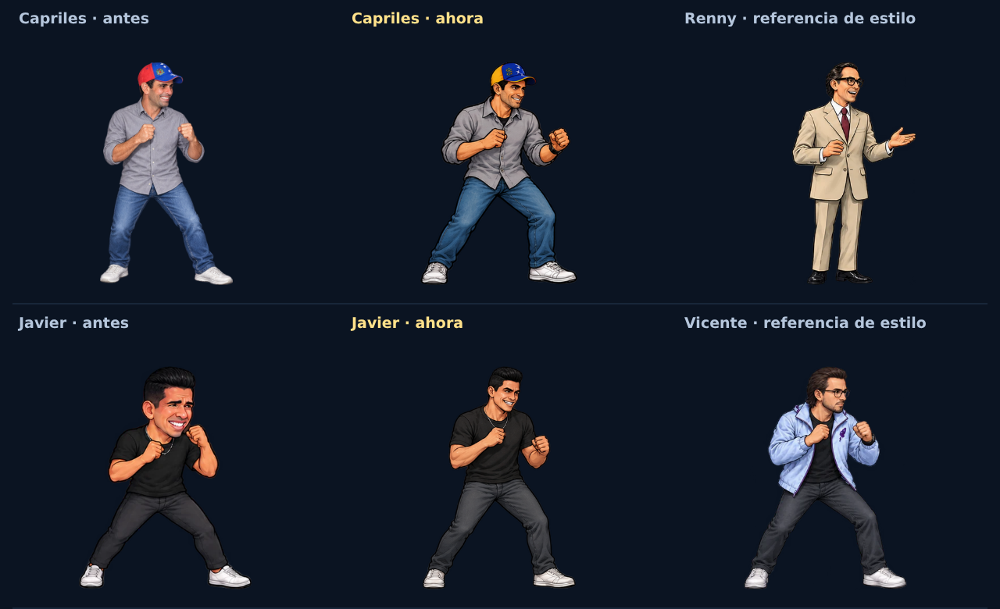

Revisión histórica v39. Javier tiene una versión posterior basada en la foto elegida por el usuario; Dayana y Nacho también se actualizaron después.

Comparación a la misma altura con el renderizador del juego: acabado ilustrado para Capriles y proporciones corregidas para Javier.